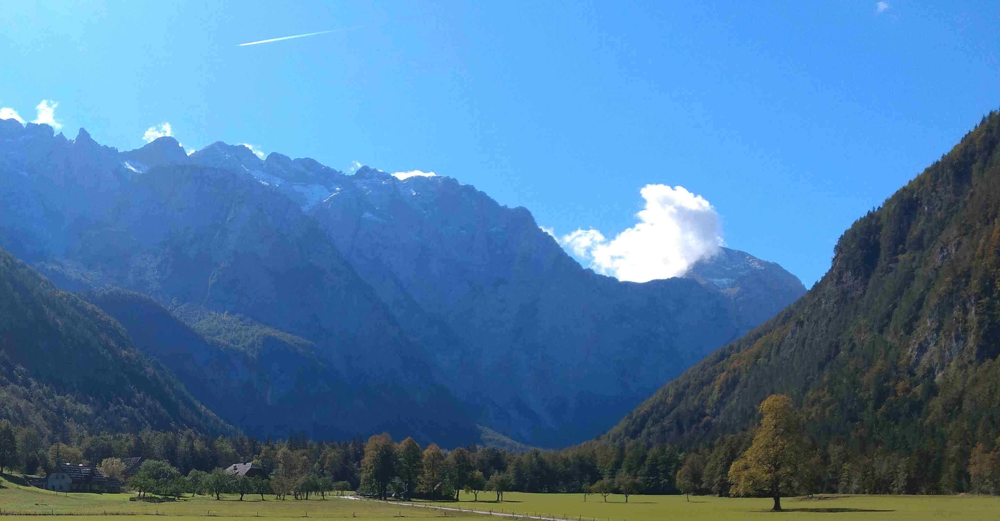

Simulating quantum transport in closed and open quantum systems
20. October 2023
In a series of two papers (see here and here), my colleagues and I tried to connect the dynamics of closed and open quantum systems. In particular, we establish a new connection between closed-system linear-response correlation functions and the open-system dynamics described by Lindblad quantum master equations with weak system-bath coupling.
Click here for the full story.
Hydrodynamics in long-range systems with kinetic constraints
18. May 2023
In the last few months, together with my collaborators Alan Morningstar and Nick O'Dea, we worked on a project studying the competition of long-range interactions and center-of-mass conservation, and their impact on transport properties of many-body systems. We published a paper that can be found on the arXiv.
Click here for the full story.
California, Casino, and Clifford circuits
20. March 2023
In this blog post, I write about the rainy Californian winter, my time at the APS March Meeting in Las Vegas, and my research on random circuits that I recently published and presented in a talk.
Click here for the full story.
Looking back on 2022
19. December 2022
